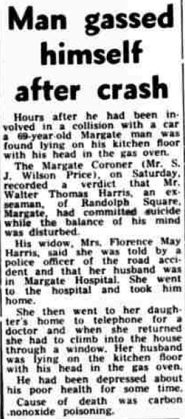
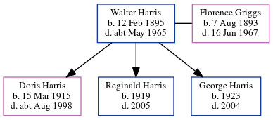

Walter Thomas Harris 1895 - c1965
[ Home ] | [ Calendar ] | [ Surnames Index ] | [ Census Index ] | [ Family History ]A general post office cleaner and seaman, Walter Harris, the husband of Florence May Griggs (the second cousin twice-removed on the father's side of Nigel Horne), was born in Thanet, Kent, England on Feb 12, 18951,2 and married Florence (with whom he had 3 children: Doris Louvain, Reginald Walter and George William) in Thanet around Aug 19154.
During his life, he was living at 6 Randolph Square, Margate, Kent, England on Sep 29, 19391; and at Randolph Square in Margate in 1965 which is where he died c. May 19653 (suicide).
Children
- Doris Louvain was born on Mar 15, 1915
- Reginald Walter was born in 1919
- George William was born in 1923
Citations
- 1939 Register - Findmypast (was the head of the household)
- England & Wales births 1837-2006 - Findmypast
- England & Wales deaths 1837-2007 - Findmypast
- England & Wales Marriages 1837-2005 - Findmypast
Media
Thanet Times - 11 May 1965

1939 Register - TNA/R39/1755/1755A/004/27
England & Wales births 1837-2006 - BMD/B/1895/1/AZ/000268/061
England & Wales deaths 1837-2007 - BMD/D/1965/2/AZ/000359/092
Family Tree
Generated by ged2site. Last updated on Jun 11, 2024